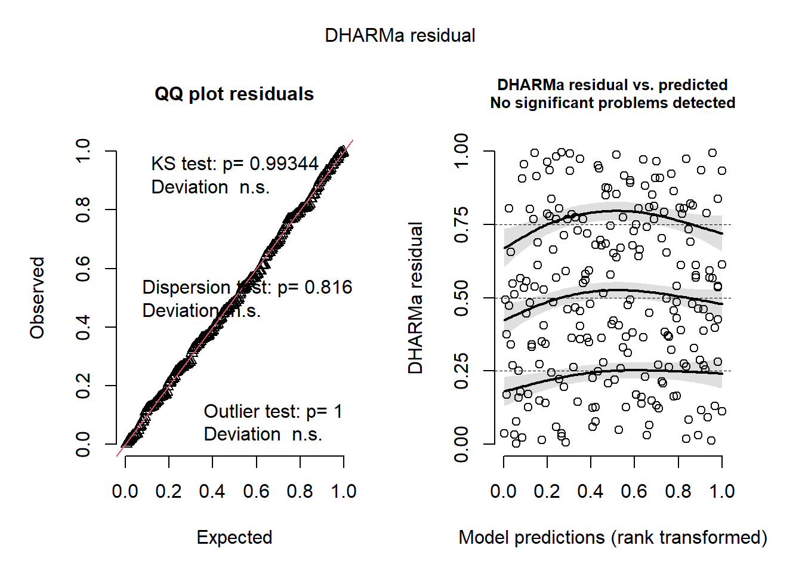

library("tidyverse")
library("here")
library("janitor")
library("tibble")
library("DHARMa")
library("MuMIn")
library("ggeffects")
library("scales")
sst <- read_csv(here("data", "SST_update2023.csv"))
nest_boxes <- read_csv(here("data", "occdist.csv"))
nest_boxes_clean <- janitor::clean_names(nest_boxes)ENVS193DS Final
Repository Link
Set up
Problem 1. Research writing
a.
In part 1, they used a Pearson’s r correlation test. In part 2, they used a one-way ANOVA test.
b.
Two additional tests that could be included are a Tukey’s HSD test and an eta-squared test. Tukey’s HSD will tell us what groups are significantly different from each other. In this example there are 5 groups (urban land, atmospheric deposition, fertilizer, wastewater treatment, and grasslands). An eta-squared test will give us the effect size between groups. Effect size will tell us how large the difference is between groups.
c.
There is a difference in average nitrogen load (kg year-1) between sources (urban land, atmospheric deposition, fertilizer, wastewater treatment, and grasslands) (p = 0.02). We found a large difference (\(\eta^2\) = effect size) between sources in average nitrogen load (one-way ANOVA results). On average urban land tended to have larger nitrogen loads than atmospheric deposition (Tukey’s HSD results), fertilizer (Tukey’s HSD results), wastewater treatment (Tukey’s HSD results), and grasslands (Tukey’s HSD results).
Problem 2. Data visualization
a.
sst_clean <- sst |> # cleaning data from sst data frame
mutate(date = ymd(date), # creating date objects
year = factor(year(date), levels = 2018:2023), # turning year variable into a factor
month = month(date, label = TRUE, abbr = TRUE)) |> # creating a month column
filter(!is.na(year)) |> # filtering out rows without a year value
group_by(year, month) |> # grouping by year and month
summarize(mean_monthly_sst = round(mean(temp, na.rm = TRUE), 1),
.groups = "drop") # taking the mean sst for each month
sst_clean |>
slice_sample(n = 5) # displaying 5 random rows of data# A tibble: 5 × 3
year month mean_monthly_sst
<fct> <ord> <dbl>
1 2021 Oct 16.6
2 2023 Apr 12.4
3 2022 Mar 13.3
4 2023 Mar 12.8
5 2021 Jul 17.6str(sst_clean) # displaying the data structuretibble [72 × 3] (S3: tbl_df/tbl/data.frame)
$ year : Factor w/ 6 levels "2018","2019",..: 1 1 1 1 1 1 1 1 1 1 ...
$ month : Ord.factor w/ 12 levels "Jan"<"Feb"<"Mar"<..: 1 2 3 4 5 6 7 8 9 10 ...
$ mean_monthly_sst: num [1:72] 15 14.3 13.5 12.8 13.6 15.5 18.2 19.6 18.2 18.5 ...b.
ggplot(sst_clean, aes(x = month, y = mean_monthly_sst, group = year, color = year)) + # using sst_clean data frame and setting values
geom_line(size = 0.8) + # line geometry
geom_point(size = 1.5) + # point geometry
labs( # axis labels
x = "Month", # x axis label
y = "Mean monthly sea surface temperature (°C)", # y axis label
color = "Year" # coloring based on year
) +
scale_color_manual( # manually setting color scale
values = c(
"2018" = "#deebf7", # color for 2018 (lightest shade)
"2019" = "#c6dbef", # color for 2019
"2020" = "#9ecae1", # color for 2020
"2021" = "#6baed6", # color for 2021
"2022" = "#3182bd", # color for 2022
"2023" = "#08519c" # color for 2023 (darkest shade)
)
) +
scale_y_continuous(limits = c(12, 20)) + # only displaying values between 12 and 20 on y axis
theme_minimal(base_size = 14) + # setting base font size to 14 points
theme(
legend.position = c(0.00, 1.00), # legend position
legend.justification = c("left", "top"), # pin legend to top-left
plot.margin = margin(t = 10, r = 10, b = 10, l = 30), # plot margin
axis.title.y = element_text(margin = margin(r = 10)), # margin for y axis
panel.grid.major = element_blank(), # removing major gridlines
panel.grid.minor = element_blank(), # removing minor gridlines
panel.background = element_blank(), # removing background
panel.border = element_rect(color = "black", fill = NA, linewidth = 0.5) # setting border color and size
)Problem 3. Data analysis
a.
A 1 represents the presence of a species and a 0 represents the absence of a species. For example a 1 underneath the sp column represents the presence of a swift parrot in a nest box.
b.
In this study, the nest boxes were built for swift parrot habitat restoration. However in the location where the nest boxes were built there are two other species that compete with swift parrots for nest boxes (tree martins and common starlings).
c.
The two years compared in the study are 2016 and 2019, which were subsequent breeding seasons. Nest boxes were originally established in 2016 and were used again in 2019.
d.
| Model number | Season | Distance to Forest Edge | Model Description | |
|---|---|---|---|---|
| 0 | No predictors (null model) | |||
| 1 | X | X | All predictors (saturated model) | |
| 2 | X | Season | ||
| 3 | X | Distance to Forest Edge |
e.
# model 0: null model
model0 <- glm(sp ~ 1, # formula
data = nest_boxes_clean, # data frame
family = "binomial" # family
)
# model 1: saturated model
model1 <- glm(sp ~ edge_distance + season, # formula
data = nest_boxes_clean, # data frame
family = "binomial" # family
)
# model 2: season
model2 <- glm(sp ~ season, # formula
data = nest_boxes_clean, # data frame
family = "binomial" # family
)
# model 3: edge distance
model3 <- glm(sp ~ edge_distance, # formula
data = nest_boxes_clean, # data frame
family = "binomial" # family
)f.
plot(
simulateResiduals(model0)
) # Displaying diagnostic plots for model0
plot(
simulateResiduals(model1)
) # Displaying diagnostic plots for model1
plot(
simulateResiduals(model2)
) # Displaying diagnostic plots for model2
plot(
simulateResiduals(model3)
) # Displaying diagnostic plots for model3
g.
AICc(model0,
model1, # best model: All predictors (saturated model)
model2,
model3) |>
# arranging output in descending order of AIC
arrange(AICc) df AICc
model1 3 226.3133
model3 2 229.6716
model2 2 236.3744
model0 1 238.8318h.
nest_boxes_clean$season <- as.factor(nest_boxes_clean$season) # setting season variable as a factor
mod_preds <- ggpredict(model1, terms = c("edge_distance [all]", "season")) # using ggpredict with edge distance and season as predictors
ggplot() +
geom_point(data = nest_boxes_clean, # data frame
aes(x = edge_distance, # x axis variable
y = sp, # y axis variable
color = season), # coloring based on season
size = 3, # size of points
alpha = 0.4) + # transparency of points
geom_ribbon(data = mod_preds, # data frame
aes(x = x, # x axis variable
ymin = conf.low, # lower limit of confidence interval
ymax = conf.high, # upper limit of CI
fill = group), # coloring based on group
alpha = 0.4) + # transparency
geom_line(data = mod_preds, # data frame
aes(x = x, # x axis variable
y = predicted, # y axis variable
color = group), # coloring based on group
linewidth = 1) + # width of line
scale_y_continuous("Probability of box occupancy", # y axis label
limits = c(0, 1), # y axis limits
breaks = seq(0, 1, by = 0.2), # increments
labels = label_percent(accuracy = 1)) + # showing percentages on y axis
scale_color_manual(name = "Season", # line colors
values = c("2016" = "darkblue", "2019" = "lightgreen")) +
scale_fill_manual(name = "Season", # ribbon colors
values = c("2016" = "darkblue", "2019" = "lightgreen")) +
labs(x = "Distance from the forest edge (m)", # x axis label
title = "Swift Parrot") + # title
theme_minimal(base_size = 14) + # minimal theme
theme(
panel.grid = element_blank()) # removing gridlinesi.
Figure 1. Swift parrots are more likely to be found near forest edges. Data from (Stojanovic, Dejan et al. (2021). Do nest boxes breed the target species or its competitors? A case study of a critically endangered bird [Dataset]. Dryad. https://doi.org/10.5061/dryad.83bk3j9sb). Points represent observations of swift parrot presence at individual nest boxes at various distances from forest edges (m). Points at 100% on the y axis represent swift parrot presence and points at 0% represent a lack of presence. Lines represent the predicted probability of swift parrot presence based on distance from forest edge. Ribbons represent the upper and lower limits of confidence intervals (CI = 95%). Colors represent seasons (blue: 2016, green: 2019).
j.
nest_boxes_clean$season <- as.factor(nest_boxes_clean$season)
ggpredict(model1, terms = c("edge_distance [0]", "season"))# Predicted probabilities of sp
season: 2016
edge_distance | Predicted | 95% CI
--------------------------------------
0 | 0.48 | 0.33, 0.64
season: 2019
edge_distance | Predicted | 95% CI
--------------------------------------
0 | 0.30 | 0.18, 0.44ggpredict(model1, terms = c("edge_distance [900]", "season"))# Predicted probabilities of sp
season: 2016
edge_distance | Predicted | 95% CI
--------------------------------------
900 | 0.12 | 0.06, 0.24
season: 2019
edge_distance | Predicted | 95% CI
--------------------------------------
900 | 0.06 | 0.03, 0.13k.
The predicted probability of a swift parrot occupying a nest box at 0 meters from the forest edge was about 50% in 2016 and 30% in 2019. The predicted probability of a swift parrot occupying a nest box at 900 meters from the forest edge was about 15% in 2016 and less than 10% in 2019 (based on the figure). Distance from forest edge and probability of swift parrot occupancy have a negative relationship (probability decreases as distance increases). This relationship can be explained by the fact that tree martins occupied the most nest boxes in the study and were most likely to use boxes far from forest edges. As a result swift parrots favored nest boxes near forest edges due to decreased competition.
Problem 4. Affective and exploratory visualizations
a.
- My exploratory visualizations were created using code while my affective visualization was created using digital pencil. My exploratory visualizations were composed of points on a graph while my affective visualization is an artistic representation of box plots as buildings.
- All of my visualizations have axes and axis labels. They also both have some sort of geometry on the plot itself.
- My exploratory visualizations examined steps based on day of the week and maximum temperature while my affective visualization examined floors climbed on school days and non school days. There were not any obvious patterns in the exploratory visualizations because they were only based on four different data points. In my affective visualization, floors climbed were higher on non school days than on school days.
- For my affective visualization, An recommended that I use windows on the buildings to represent something about my data. As a result, I drew windows with different colors that corresponded to a specific number of cumulative floors climbed.
b.
I completed this component in workshop.